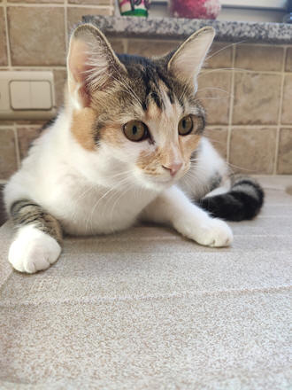
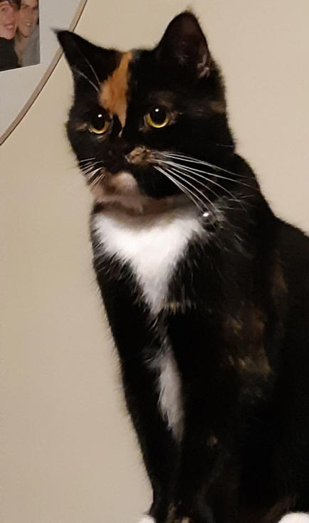
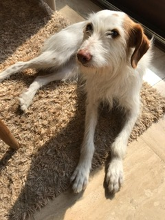

ADOPTIEVERHALEN
Ook uw verhaal op deze website?
dierenasielschoten@gmail.com
De gebruiker mag geen informatie verkregen op deze site wijzigen, kopiëren, verdelen, doorgeven, verspreiden, weergeven, reproduceren, publiceren op om het even welke wijze of door om het even welk middel of criterium, zonder voorafgaande en schriftelijke toelating van De Antwerpse Keten voor Dieren vzw.

KATMOLLIE

MUFFIN

Jullietta